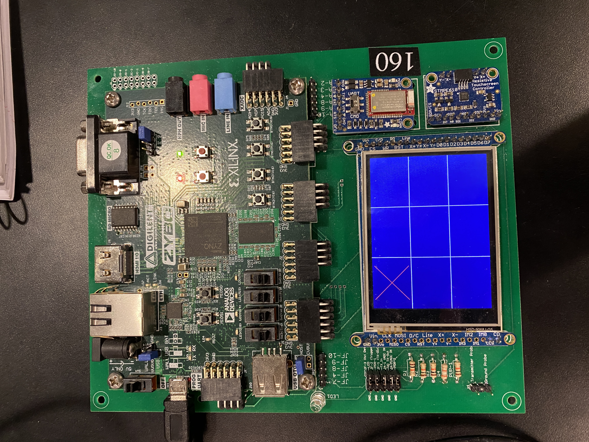

Tic-Tac-Toe
Intro
I built an unbeatable Tic-Tac-Toe AI on a Xilinx ZYBO board in C. I also created drivers for the interrupts, touchscreen, buttons, and switches also in C.
Summary 
I created a Tic-Tac-Toe AI using a minimax algorithm to compute and return the score of the available moves. The algorithm computes either the maximum score (the best) and the minimum score (the worst). Using this computation the best move can be returned and shown on the screen.
This game also includes both Moore and Mealy state machines to correctly account for possible states that the game can be in, for easy to edit and easy to read code.
I also created drivers for the buttons and switches for another programmer to use shoudl they want to interface with aspects of the board. This was done by reading docuemtnation for bit locations of the buttons and switches, and abstracting reading and writing register bits into easy to call functions. I also created a touchscreen driver that abstracts touchscreen data into easy to use functions.
Future Improvement/Iterations
Future iterations of this might include an option for Player vs Player gameplay. Using a similar framework of the minimax algorithm similar games such as connect four, battle ship or something might also be possible.